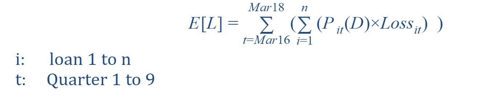

Comprehensive Capital Analysis and Review (CCAR)
November 10, 2017
Comprehensive Capital Analysis and Review (CCAR) is a United States regulatory framework introduced by the Federal Reserve to assess, regulate, and supervise large banks and financial institutions– collectively referred to in the framework as bank holding companies (BHCs).[1]
The main purpose of CCAR is to make sure that large banks whose total assets are larger than 50 million dollors set aside adequate capital for absorbing future losses. The banks should annually evaluate and report capital position under three supervisory scenarios - baseline, adverse, and severely adverse scenarios.
The goal of our project was to forecast a nine-quarter Expected Loss (ECL) (from Mar 2016 to Mar 2018) for a portfolio of mortgage loans from Fannie Mae (2009Q1) under three CCAR economic scenarios – Baseline, Adverse and Severely adverse.
Based on the formula:
ECL = PD*LGD*EAD
where LGD = Loss/EAD = 1 + (Cost-Proceeds)/EAD,
We implemented a logistic regression to estimate Probability of Default (PD) and two liner regressions to forecast Costs and Proceeds. The Exposure at Default (EAD) equaled to Unpaid Balance of the mortgages. Combined all the forecasting and calculation results together, we finally got the sum of ECL numbers by scenarios in nine quarters.
